Reinforcement Learning
CSCI 4511/6511
Announcements
- Extra Credit HW: Due 4 Dec
- Project Proposals
- Final Exam: 4 Dec
- In class: 120 minutes
- Open note: 10 sides of paper (8.5”x11” or A4)
- Project Deadline: 13 Dec
Monte Carlo Tree Search
Multi-Armed Bandits
- Slot machine with more than one arm
- Each pull has a cost
- Each pull has a payout
- Probability of payouts unknown
- Goal: maximize reward
- Time horizon?
Solving Multi-Armed Bandits
Confidence Bounds
- Expected value of reward per arm
- Confidence interval of reward per arm
- Select arm based on upper confidence bound
- How do we estimate rewards?
- Explore vs. exploit
Bandit as MDP?
Bandit Strategies
Gittins Index: \(\lambda = \max \limits_{T>0}\frac{E[\sum^{T-1}\gamma^tR_t]}{E[\sum^{T-1}\gamma^t]}\)
Upper Confidence Bound for arm \(M_i\):
- \(UCB(M_i) = \mu_i + \frac{g(N)}{\sqrt{N_i}}\)
- \(g(N)\) is the “regret”
Thompson Sampling
- Sample arm based on probability of being optimal
Tree Search
- Forget DFS, BFS, Dijkstra, A*
- State space too large
- Stochastic expansion
- Impossible to search entire tree
- Can simulate problem forward in time from starting state
Monte Carlo Tree Search
- Randomly simulate trajectories through tree
- Complete trajectory
- No heuristic needed1
- Need a model
- Better than exhaustive search?
Selection Policy
- Focus search on “important” parts of tree
- Similar to alpha-beta pruning
- Explore vs. exploit
- Simulation
- Not actually exploiting the problem
- Exploiting the search
Monte Carlo Tree Search
- Choose a node
- Explore/exploit
- Choose a successor
- Continue to leaf of search tree
- Expand leaf node
- Simulate result until completion
- Back-propagate results to tree
Monte Carlo Tree Search
Selection/Search
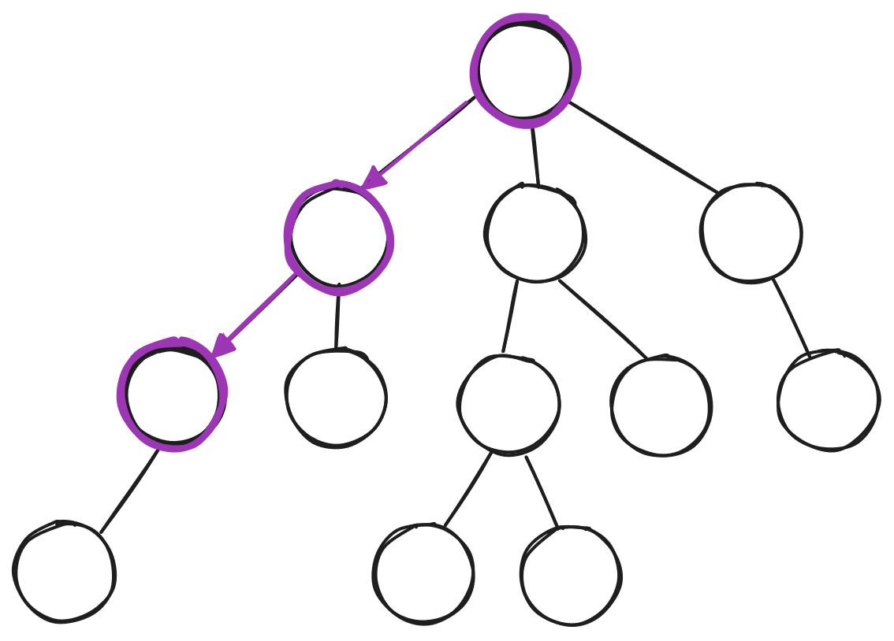Monte Carlo Tree Search
Expansion
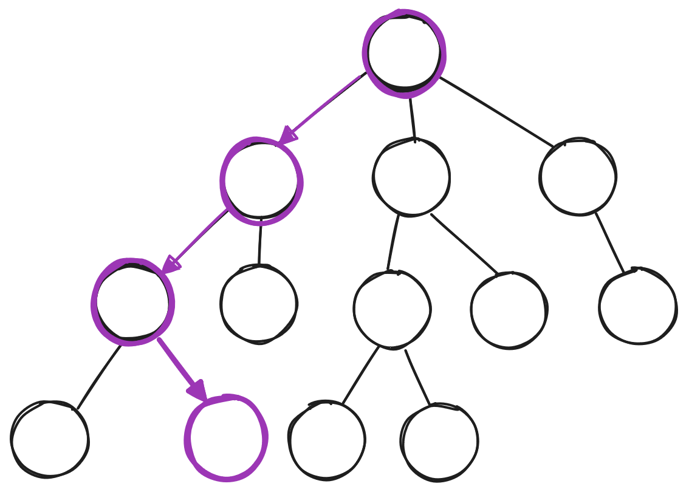Monte Carlo Tree Search
Simulation/Rollout
Monte Carlo Tree Search
Back-Propagation
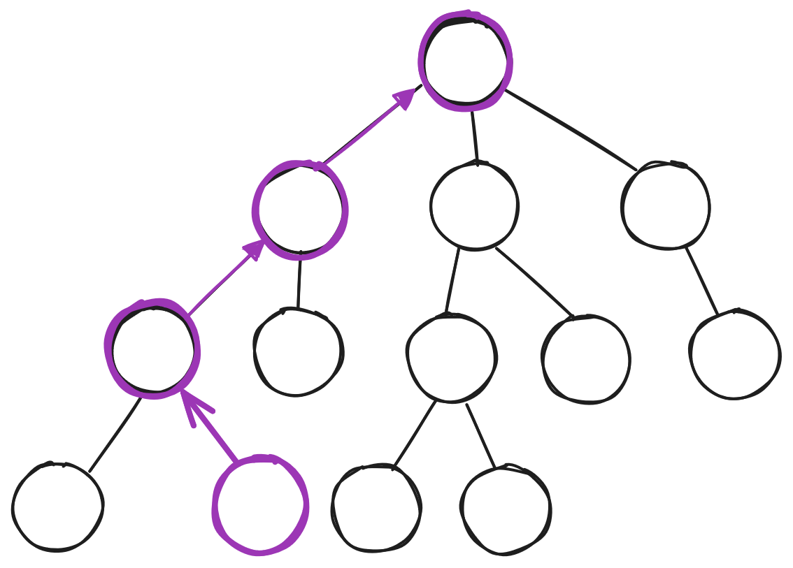Upper Confidence Bounds for Trees (UCT)
- MDP: Maximize \(Q(s, a) + c\sqrt{\frac{\log{N(s)}}{N(s,a)}}\)
- \(Q\) for state \(s\) and action \(a\)
- POMDP: Maximize \(Q(h, a) + c\sqrt{\frac{\log{N(h)}}{N(h,a)}}\)
- \(Q\) for history \(h\) and action \(a\)
- History: action/observation sequence
- \(c\) is exploration bonus
UCT Search - Algorithm
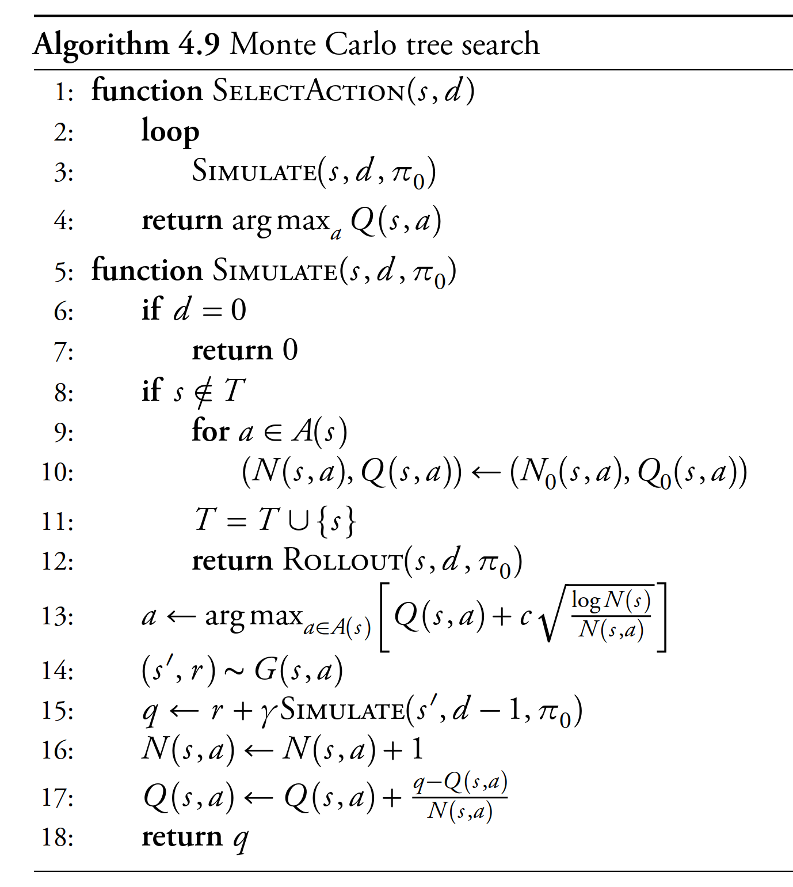
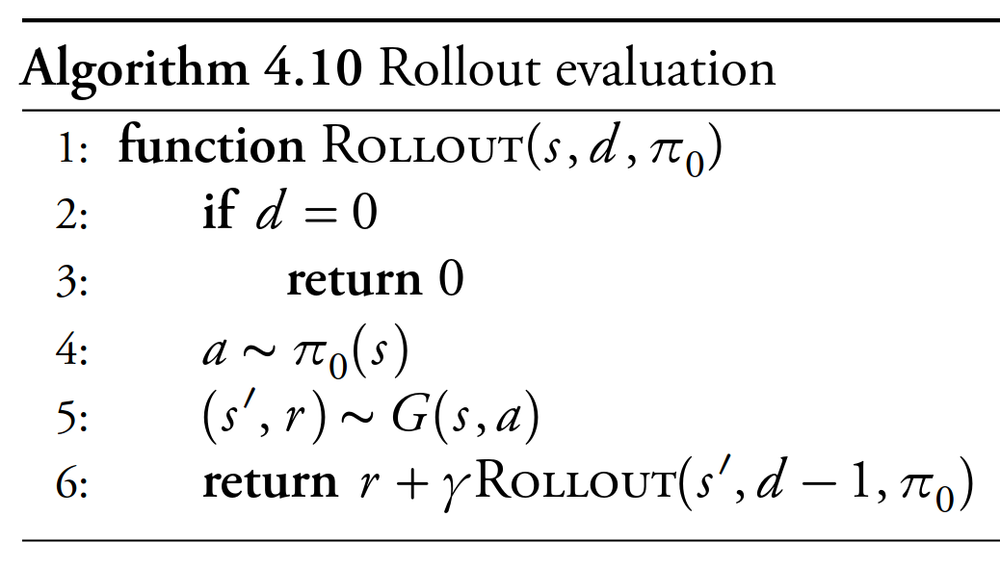
Mykal Kochenderfer. Decision Making Under Uncertainty, MIT Press 2015
Monte Carlo Tree Search - Search
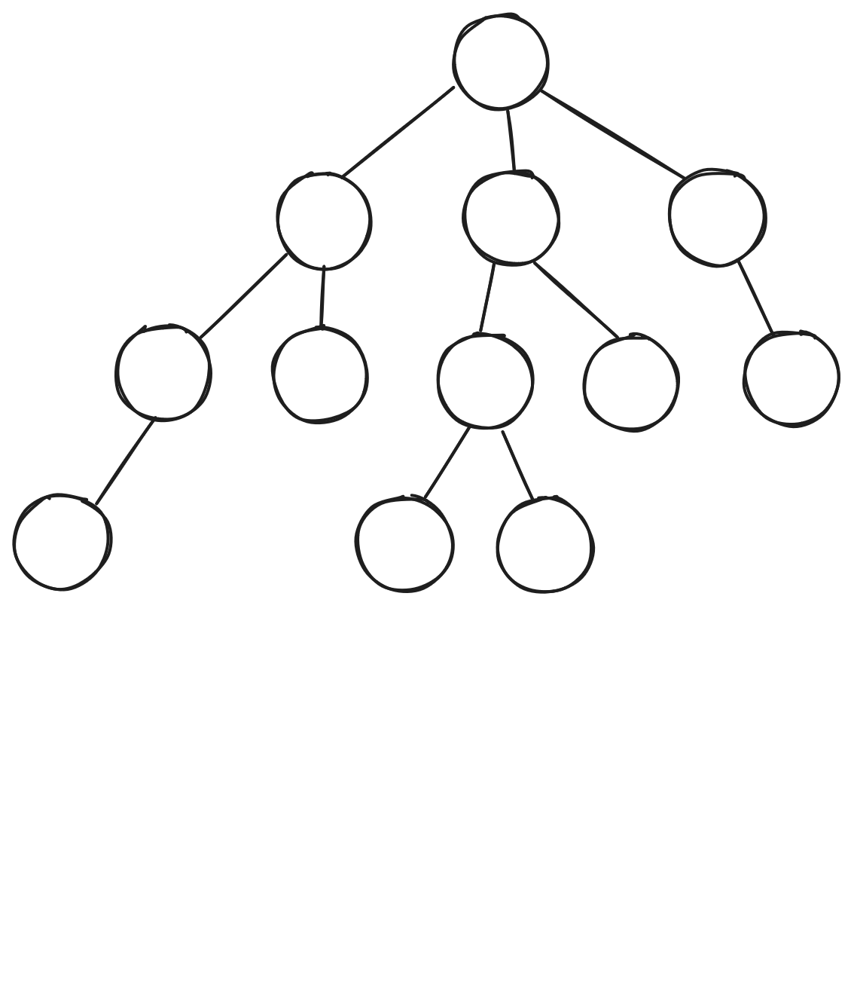
If current state \(\in T\) (tree states):
- Maximize: \(Q(s,a) + c\sqrt{\frac{\log N(s)}{N(s,a)}}\)
- Update \(Q(s,a)\) during search
Monte Carlo Tree Search - Expansion
- State \(\notin T\)
- Initialize \(N(s,a)\) and \(Q(s,a)\)
- Add state to \(T\)
Monte Carlo Tree Search - Rollout
- Policy \(\pi_0\) is “rollout” policy
- Usually stochastic
- States not tracked
Model Uncertainty
Erstwhile
- States
- Actions
- Transition model between states, based on actions
- Known rewards
Model Uncertainty
- No model of transition dynamics
- No initial knowledge of rewards
😣
We can learn these things!
Model Uncertainty
Action-value function:
\(Q(s, a) = R(s, a) + \gamma \sum \limits_{s'} T(s' | s, a) U(s')\)
we don’t know \(T\):
\(U^\pi(s) = E_\pi \left[ r_t + \gamma r_{t+1} + \gamma^2 r_{t+2} + \gamma^3 r_{t+3} + ...|s \right]\)
\(Q(s, a) = E_\pi \left[ r_t + \gamma r_{t+1} + \gamma^2 r_{t+2} + \gamma^3 r_{t+3} + ...|s,a \right]\)
Temporal Difference (TD) Learning
- Take action from state, observe new state, reward
\(U(s) \gets U(s) + \alpha \left[ r + \gamma U(s') - U(s)\right]\)
- Update immediately given \((s, a, r, s')\)
- TD Error: \(\left[ r + \gamma U(s') - U(s)\right]\)
- Measurement: \(r + \gamma U(s')\)
- Old Estimate: \(U(s)\)
TD Learning - Example
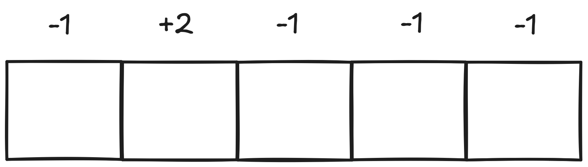
Q-Learning
- \(U^\pi\) gives us utility
- Solving for \(U^\pi\) allows us to pick a new policy
State-action value function: \(Q(s,a)\)
- \(\max_a Q(s,a)\) provides optimal policy
- Goal: Learn \(Q(s,a)\)
Q-Learning
Iteratively update \(Q\):
\(Q(s,a) \gets Q(s,a) +\alpha \left[R + \gamma \max \limits_{a'} Q(s', a') - Q(s,a)\right]\)
- Current state \(s\) and action \(a\)
- Next state \(s'\), next action(s) \(a'\)
- Reward \(R\)
- Discount rate \(\gamma\)
- Learning rate \(\alpha\)
Q-Learning Algorithm
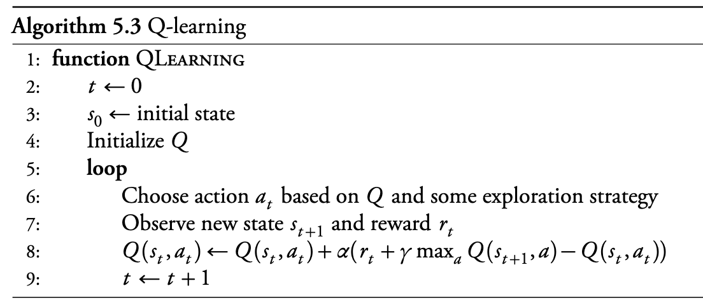Mykal Kochenderfer. Decision Making Under Uncertainty, MIT Press 2015
Q-Learning Example
Sarsa
Q-Learning: \(Q(s,a) \gets Q(s,a) +\alpha \left[R + \gamma \max \limits_{a'} Q(s', a') - Q(s,a)\right]\)
Sarsa:
\(Q(s,a) \gets Q(s,a) +\alpha \left[R + \gamma Q(s', a') - Q(s,a)\right]\)
Differences?
Sarsa Example
Q-Learning vs. Sarsa
- Sarsa is “on-policy”
- Evaluates state-action pairs taken
- Updates policy every step
- Q-learning is “off-policy”
- Evaluates “optimal” actions for future states
- Updates policy every step
Exploration vs. Exploitation
- Consider only the goal of learning the optimal policy
- Always picking “optimal” policy does not search
- Picking randomly does not check “best” actions
- \(\epsilon\)-greedy:
- With probability \(\epsilon\), choose random action
- With probability \(1-\epsilon\), choose ‘best’ action
- \(\epsilon\) need not be fixed
Eligibility Traces
- Q-learning and Sarsa both propagate Q-values slowly
- Only updates individual state
- Recall MCTS:
- (Also recall that MCTS needs a generative model)
Recall MCTS
Eligibility Traces
- Keep track of what state-action pairs agent has seen
- Include future rewards in past Q-values
- Very useful for sparse rewards
- Can be more efficient for non-sparse rewards
Eligibility Traces
- Keep \(N(s,a)\): “number of times visited”
- Take action \(a_t\) from state \(s_t\):
- \(N(s_t,a_t) \gets N(s_t,a_t) + 1\)
- Every time step:1
- \(\delta = R + \gamma Q(s',a') - Q(s,a)\)
- \(Q(s,a) \gets \alpha \delta N(s,a)\)
- \(N(s,a) \gets \gamma \lambda N(s,a)\)
- Discount factor \(\gamma\)
- Time decay \(\lambda\)
Sarsa-\(\lambda\)
Sarsa:
- \(Q(s,a) \gets Q(s,a) +\alpha \left[R + \gamma Q(s', a') - Q(s,a)\right]\)
Sarsa-\(\lambda\):
- \(\delta = R + \gamma Q(s',a') - Q(s,a)\)
- \(Q(s,a) \gets \alpha \delta N(s,a)\)
Sarsa-\(\lambda\)
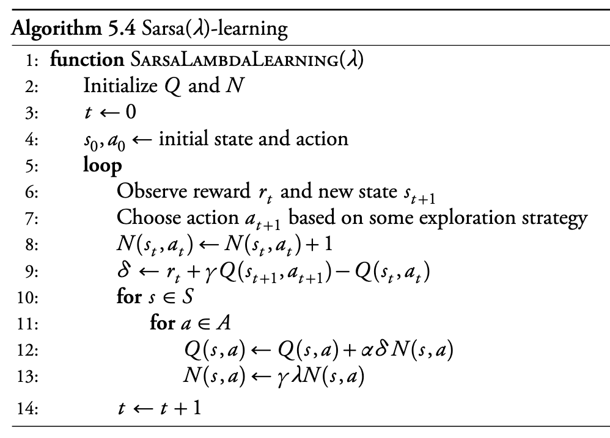Sarsa-\(\lambda\) Example
Q-\(\lambda\) ?
Q-Learning:
\(\quad \quad Q(s,a) \gets Q(s,a) +\alpha \left[R + \gamma \max \limits_{a'} Q(s', a') - Q(s,a)\right]\)
Sarsa:
\(\quad \quad Q(s,a) \gets Q(s,a) +\alpha \left[R + \gamma Q(s', a') - Q(s,a)\right]\)
Sarsa-\(\lambda\):
\(\quad \quad \delta = R + \gamma Q(s',a') - Q(s,a)\) \(\quad \quad Q(s,a) \gets \alpha \delta N(s,a)\)
Watkins Q-\(\lambda\)
Idea: only keep states in N(s,a) that policy would have visited
Some actions are greedy: \(\max \limits_a' Q(s, a')\)
Some are random
On random action, reset \(N(s,a)\)
Why the difference from Sarsa?
Approximation Methods
- Large problems:
- Continuous state spaces
- Very large discrete state spaces
- Learning algorithms can’t visit all states
- Assumption: “close” states \(\rightarrow\) similar state-action values
Local Approximation
- Store \(Q(s,a)\) for a limited number of states: \(\theta(s,a)\)
- Weighting function \(\beta\)
- Maps true states to states in \(\theta\)
\(Q(s,a) = \theta^T\beta(s,a)\)
Update step:
\(\theta \gets \theta + \alpha \left[R + \gamma \theta^T \beta(s', a') - \theta^T\beta(s, a)\right] \beta(s, a)\)
Linear Approximation Q-Learning
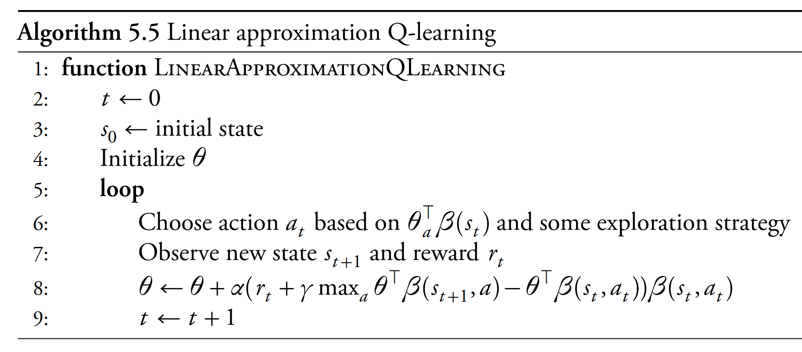 Mykal Kochenderfer. Decision Making Under Uncertainty, MIT Press 2015
Example: Grid Interpolations
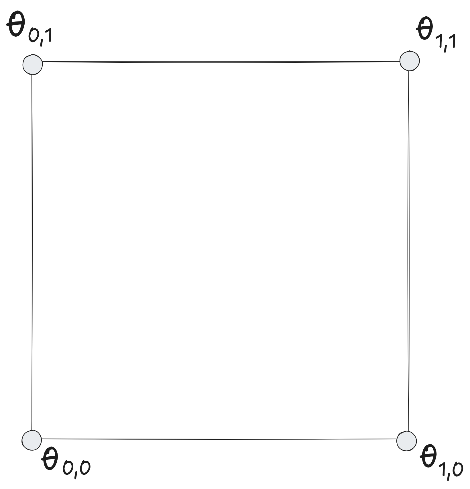End.

References
Richard S. Sutton and Andrew G. Barto. Reinforcement Learning: An Introduction. 2nd Edition, 2018.
Mykal Kochenderfer, Tim Wheeler, and Kyle Wray. Algorithms for Decision Making. 1st Edition, 2022.
- Stanford CS234 (Emma Brunskill)
- Stanford CS228 (Mykal Kochenderfer)